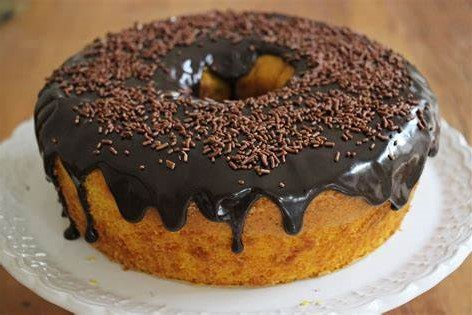
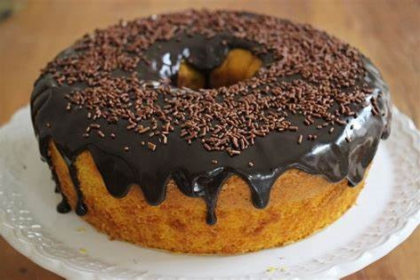

Receitas da Rafa!
Bolo de cenoura com cobertura de chocolate!
Bolo de cenoura com cobertura de chocolate!
 

Em um liquidificador, adicione a cenoura, os ovos e o óleo, depois misture.
Acrescente o açúcar e bata novamente por 5 minutos.
Em uma tigela ou na batedeira, adicione a farinha de trigo e depois misture novamente.
Acrescente o fermento e misture lentamente com uma colher.
Asse em um forno preaquecido a 180° C por aproximadamente 40 minutos.
Despeje em uma tigela a manteiga, o chocolate em pó, o açúcar e o leite, depois misture.
Leve a mistura ao fogo e continue misturando até obter uma consistência cremosa, depois despeje a calda por cima do bolo.